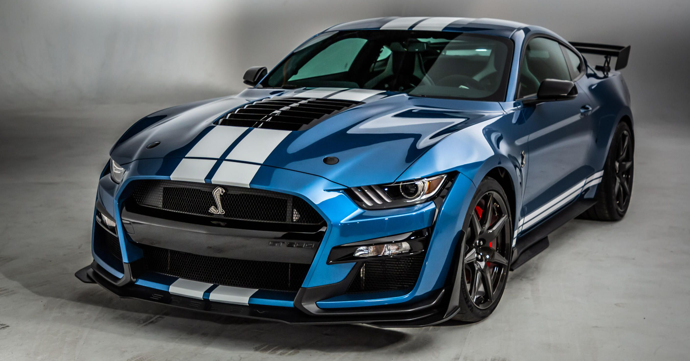

2021 Mustang Shelby® GT500®
Visão geral
O 2021 Ford Mustang Shelby GT500 ostenta 760 cavalos de caos V-8 supercharged, mas também possui o porte atlético de carros esportivos menores e mais leves. Esses elogios o tornam o carro de produção mais potente que a Ford já construiu, bem como o Mustang mais envolvente que já dirigimos, e é por isso que está em nossa lista de Escolha dos Editores. No centro da agitação está o V-8 de 5,2 litros superalimentado do Shelby, que reproduz uma trilha sonora eletrizante por meio de seus escapes semelhantes a uma bazuca. Uma transmissão manual não está disponível, mas a automática de dupla embreagem de sete velocidades opera quase telepaticamente. O cupê com tração traseira também acelera tão tenazmente que deveria incluir uma garantia na roupa íntima. O GT500 é igualmente emocionante quando atropela um metal mais exótico em uma pista de corrida. Claro, ele tem uma economia de combustível terrível e custa muito para um Mustang - especialmente com o pacote de fibra de carbono de preço exorbitante - mas o 2021 Shelby GT500 é um carro muscular magnífico e um carro esporte fenomenal.
Historia
O 2020 GT500 foi apresentado no Salão Internacional do Automóvel da América do Norte em janeiro de 2019, em Detroit. É movido por um motor V8 de liga de alumínio "Predator" de 5,2 litros construído à mão com um supercharger de 2,65 litros. O Shelby GT500 produz 760 cv (567 kW; 771 cv) e 625 lb⋅ft (847 N⋅m) de torque.No entanto, ele não chegará ao mercado europeu devido ao motor V8 de 5,2 litros não estar em conformidade com os regulamentos rodoviários europeus, portanto, ele se concentrará apenas na América do Norte e países do Oriente Médio.